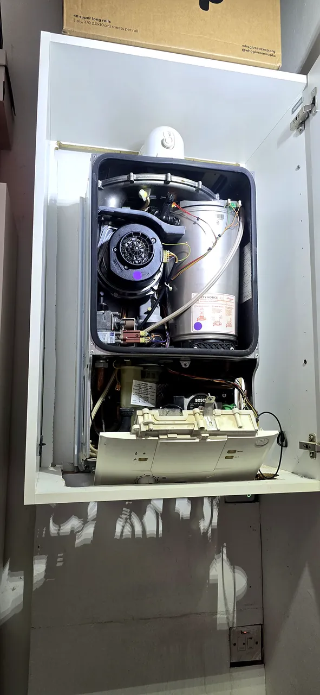

Hard water, limescale and the lukewarm shower
Manchester water isn't the hardest in England, but a scaled heat exchanger will still cost you hot water and gas — and it happens quietly.
Read itTopping it up every week isn't a quirk of your boiler — it's a leak, a vessel or a valve. One of the three is an easy fix.
If you find yourself pressing the filling loop every few days, the boiler isn't "just like that". Pressure in a sealed heating system doesn't go anywhere on its own. Water is escaping somewhere, or the part that absorbs expansion has stopped working. There are three realistic causes and it's worth knowing which one you're looking at before anyone quotes you.
The most common by a distance, and often the least dramatic — a weep at a radiator valve tail, a compression fitting under a floorboard, a towel rail joint behind a bathroom panel. A leak small enough to evaporate before it stains a ceiling is still easily enough to drop half a bar in a week.
Things worth checking yourself: the floor under every radiator valve, the pipework where it comes through the floor near the boiler, and the underside of any towel rail. Look for green or white crusty deposits on brass and copper — that's the fingerprint of a slow weep even when it's dry at the time you look.
Inside your boiler is a small steel vessel with a rubber diaphragm and a cushion of nitrogen behind it. When water heats up it expands, and that cushion takes up the extra volume. Over the years the charge leaks away, the cushion goes, and the water has nowhere to go.
The give-away is pressure that swings: near zero when the heating is cold, then up past 2.5 or 3 bar when it's been running for twenty minutes. If you top it up cold, the excess gets pushed out of the pressure relief valve when it gets hot, and you're back to zero the next morning. Recharging the vessel is a quick job; replacing one is a moderate one.

Every sealed system has a safety valve that dumps water outside if the pressure gets dangerously high. Once it has lifted a few times, a bit of debris on the seat can stop it closing properly and it drips continuously.
Find the small copper pipe coming out through the wall near the boiler — usually 15mm, pointing down. If it's wet, or there's a limescale trail down the brickwork below it, that valve is passing. Worth doing on a dry day so you know what you're seeing.
Why it matters more than the inconvenience. Every time you top up, you're putting fresh mains water into the system — and fresh water carries dissolved oxygen. Oxygen plus steel radiators makes magnetite, the black sludge that blocks radiators and wrecks pumps. A boiler that's been topped up weekly for two years has usually aged five.
We pressure-test rather than guess. If it's the vessel, we can usually recharge or replace it in the same visit. If it's a leak, a proper look at the accessible pipework and valves finds most of them without lifting your whole floor. If it's the relief valve, it's a straight swap.
Everything is agreed with you before anything comes apart, and if it turns out to be a leak buried under a solid floor we'll talk you through the options honestly rather than start digging.
Manchester water isn't the hardest in England, but a scaled heat exchanger will still cost you hot water and gas — and it happens quietly.
Read it
Which half of the radiator is cold tells you whether you need a 30-second job with a bleed key or a proper flush.
Read it
Who is allowed to connect it, why the stability chain matters, and the tightness test that nobody watches being done.
Read itStraight through to Mohammad Ejaz. No call centre, no hold music.